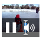

The Browser supports native HTML5 video playback for MPEG-4 videos. Videos can play within the browser or within full-screen web apps.
To enable video, add a <video> tag to an HTML file:
<video id = "v" src = "media/vid.mp4" poster = "img/vid.png" width = "72" height = "72" type = "video/mp4; codecs='avc1.42E01E, mp4a.40.2'" controls > </video>
The width and height attributes can alternately be set with CSS properties. They specify the dimensions of the preview area that, when tapped, activates the video playback. On desktop browsers, the video plays back within this preview area, in which case they should be the same size. Like most other mobile browsers, the Browser plays back videos within a separate playback panel, so video previews may take up a much smaller part of the screen with no effect on the quality of video playback. The poster attribute allows you to replace the default preview image with one you supply.
This example, suitable only for mobile browsers, shows a small control that initiates video playback:
Once the video is playing, users can control or cancel playback directly. An application can also affect playback, but not with touch controls placed on the page, which are rendered inaccessible by the playback panel. See HTML5 Media API for information on tools needed to control playback for both audio and video.
The sample markup above features an optional type that associates MIME types and video codecs, but any failure to specify it leads the Browser to use a default codec. As an alternative to the video tag's src attribute, nested source tags allow you to specify videos in order of preference, with the most widely supported video formats placed first:
<video id="v" poster="img/vid.png" width="72" height="72" controls> <source src="vid.mp4" type="video/mp4; codecs='avc1.42E01E, mp4a.40.2'" /> <source src="vid.ogv" type="video/ogg; codecs='theora, vorbis'" /> <!-- fallback for browsers that do not support HTML5 video --> </video>
The Browser and others that support the HTML5 video standard ignore any non-source content within the video tag. Those that do not, interpret it. As a fallback for non-HTML5 browsers, any Flash video implemented with the object tag can be specified as nested content.
The Browser supports the HTML5 audio tag. Place markup such as the following HTML page, and the browser presents a set of playback controls:
<audio controls autoplay src="media/song.mp3"> <!-- fallback content for browsers that do not support HTML5 audio --> </audio>
The controls attribute is necessary to present the browser's default audio playback element. Without it, it can still produce audio from custom interface controls using JavaScript. The autoplay attribute causes the audio to start playing immediately when the page loads.
SIDEBAR: The DataSet API
Browser 8.5 supports custom data attributes, HTML5's standard mechanism to attach local data to DOM elements. For example, here is an element embedded with custom data:
<p data-key="value">Data can be accessed using el.dataset.key or el.dataset['key'], either of which serves as an alternative to the traditional approach: el.getAttribute('data-key').
This example shows a default set of playback controls, along with an alternative touch-based playback interface that relies on the HTML5 Media API described below. Touching any of the song titles hides the audio element shown at the top of the first screen, and replaces it with a custom volume control.
Warning: If more than one audio element is present on a page, they may potentially play back at the same time.
Each of the song titles uses CSS gradient formatting to indicate progress of playback. (The Browser also supports the HTML5 progress tag, which may serve as an alternative in this case.) Tapping each song title references a new embedded filename from the hidden audio element, loads it, then plays it:
<div data-artist="El Ten Eleven" data-file="Every_Direction_Is_North"></div> <script> var audio = document.querySelector('audio'); var currentSong; function play(event) { currentSong = event.target; currentSong.classList.add('playing'); audio.src = "media/" + currentSong.dataset.file + ".mp3"; audio.load(); audio.play(); } </script>
If the song is already playing, tapping again pauses it:
if (currentSong.classList.contains('playing')) { app.audio.pause(); currentSong.classList.remove('playing'); currentSong.classList.add('paused'); } else if (currentSong.classList.contains('paused')) { app.audio.play(); currentSong.classList.add('playing'); currentSong.classList.remove('paused'); }
To represent playback state within each progress tracker, you need to know each track's full duration. The duration property becomes available once the audio file loads, when the durationchange event fires on the audio element:
var songDuration; // measured in seconds audio.addEventListener('durationchange', function(e) { songDuration = e.target.duration; });
Likewise, the timeupdate event makes the current position within the track available via the currentTime property as the media plays:
var songPosition; // measured in seconds var progress; // decimal value audio.addEventListener('timeupdate', function(e) { songPosition = audio.currentTime; progress = songPosition / songDuration; // ...use progress to modify interface }
The ended event occurs as each track completes playback. In this case, it signals the application to load and play the next track in the playlist, if available:
audio.addEventListener('ended', function(e) { var next; if (next = currentSong.nextSibling) { // play the next song return(true); } // reset interface return(false); }
The draggable slider control at the top of the screen adjusts playback volume, a decimal value from 0 to 1:
function volumeDragHandler(e) {
if (e.touches.length > 1) return(false); // allow only 1-finger touches
e.preventDefault(); // disable page scroll and mouse events
e.stopPropagation(); // touch doesn't fire on background layers
var vol = e.target; // get volume controller
// calculate touch position:
var dragProgress = (e.touches[0].pageX - vol.offsetLeft) /
vol.scrollWidth);
audio.volume = dragProgress; // reflect in audio volume
// modify volume slider to display new volume level here
}
The application allows the same drag gesture to skip within each track, by modifying the currentTime property:
var dragProgress = ( (e.touches[0].pageX - currentSong.offsetLeft) / currentSong.scrollWidth ); audio.currentTime = app.songDuration * dragProgress;
Warning: Mobile users are likely to skip ahead to a portion of the song that has not yet loaded, in which case the browser may send a new request for a different portion of the media file.
For information on how to handle touch events, see Touch Gestures.
The following summarizes the set of API calls available when building your own multimedia application. By default, the media element referenced can be either a audio and video elements. However, the Browser's dedicated full-screen video playback interface prevents touch input, making API control relatively inaccessible for video.
The following events that fire on the media element respond to various forms of user input:
Other API events allow applications to respond to various network states as data is buffered over a network. The following list briefly summarizes the conditions that would fire each event:
Browser 8_5 supports browser-based HTML5 multimedia via the <video> and <audio> tags. When touched, both videos and audios play back within a dedicated, landscape-oriented interface outside the specified screen layout. Other than differences in how they are presented, <video> and <audio> tags support the same set of features.
The following shows a simple way to specify a video:
<video id="vid" width="480" height="320" src="vid.mp4" type="video/mp4; codecs='avc1.42E01E, mp4a.40.2'"> </video>
Ordinarily, the height and width attributes (or corresponding CSS) would determine the dimensions of the video, but the dedicated playback interface allows you to size them to smaller icons, specified with the poster attribute, used to trigger this mode:
<video id="vid" width="72" height="72" poster="vid.png" src="vid.mp4" type="video/mp4; codecs='avc1.42E01E, mp4a.40.2'"> </video>
The controls attribute has no effect on how the video playback interface appears in Browser 8_5.
Use the source tag to specify a list of available alternative file formats, in order of preference:
<video id="vid" width="480" height="320" preload loop> <source src="vid.mp4" type="video/mp4; codecs='avc1.42E01E, mp4a.40.2'" /> <source src="vid.ogv" type="video/ogg; codecs='theora, vorbis'" /> </video>
Note: To extend video support to non-HTML5 browsers, you can nest additional markup within the video element to specify Flash video as a fallback.
The preload attribute forces the media file to cache before it is played; otherwise specifying autoplay plays it immediately. The loop attribute plays the video continuously. The type attribute specifies pairings of MIME encodings and media codecs. The following type attribute values are supported:
Browser 8_5 supports MP3, AAC, PCM, and Ogg Vorbis audio file formats.
Browser 8_5 supports HTML5's Media API, which consists of methods called on, or events fired on video or audio elements:
Note: On-screen controls that might affect media playback are unavailable while the media's playback interface displays. Exiting the playback mode requires explicit input from the user, and cannot be controlled via the Media API.
You can call the following API functions or properties directly on video and audio elements to control multimedia content within your application:
The HTML5 Multimedia API introduces numerous specialized events. The following events, called from video or audio elements, may respond to user input:
Numerous other low-level events allow applications to respond to detailed sets of network states as data is buffered. The following list briefly summarizes the conditions that would fire each event:
See Also:
The HTML5 audio tag works very much like the video tag, and supports the same set of attributes:
<audio id="audioplayer" controls loop autoplay> <source src="myAudio.mp3"/> <source src="myAudio.wav"/> <source src="myAudio.ogg"/> </audio>
By default, audios present a playback interface:
To make an audio play in the background, sets its autoplay attribute and use CSS to hide the playback controls:
audio { display: none }
As with video, the audio region can feature nested fallback content that plays on browsers that don't support HTML5 multimedia:
<audio id="audioplayer" preload controls loop> <source src="myAudio.mp3"/> <source src="myAudio.wav"/> <source src="myAudio.ogg"/> <embed type = "application/x-shockwave-flash" src = "http://www.google.com/reader/ui/3247397568-audio-player.swf?audioUrl= myAudio.mp3"; width = "200" height = "27" allowscriptaccess = "never" quality = "best" bgcolor = "#ffffff" wmode = "window" flashvars = "playerMode=embedded" /> </audio>
The following example demonstrates a simple playback interface that loads data from each selected track into a common, hidden audio player:
It relies on three Multimedia API calls: play(), pause(), and load() to restart from the beginning of an audio track. To select new audio tracks, it modifies the audio player's src attribute.
You can embed videos directly on a web page using the HTML5 video tag. The following example shows how to specify a set of alternative video files with which to target the widest range of browsers:
<video id="myVideo" width="480" height="320" preload controls loop> <source src="lo_myVideo.mp4" type="video/mp4; codecs='avc1.42E01E, mp4a.40.2'" /> <source src="lo_myVideo.webm" type="video/webm; codecs='vp8, vorbis'" /> <source src="lo_myVideo.ogv" type="video/ogg; codecs='theora, vorbis'" /> </video>
The video tag can contain any number of nested source tags to specify alternative video files in various media formats, along with associated mime types and codecs that help browsers determine support. Arrange in order of preference, with the most likely match placed first. Browsers do not display an error if none of these files or codecs are available, so make sure to provide a suitable range of alternatives.
Various video tag attributes allow control over how the video performs:
Like images, the inherent dimensions of videos should be reflected in the video tag's height and width attributes. Otherwise, consistently sized sets of videos can be sized within CSS:
video { height: 320; width: 432; }
Note: Preloaded videos are downloaded even if they are hidden using CSS's display:none property. Likewise if you were to apply CSS to hide a video element after playback starts, you can still hear the audio.
Videos are best viewed at their actual size, since scaling them down may lead to performance degradation and visual artifacts. To display landscape-oriented video on the widest range of touch-based browsers, specify a maximum width of 480 and a height of 320.
Note that the autoplay attribute renders the preload attribute unnecessary. Since autoplay causes the video to play immediately when the page loads, there is no time prior to playback for the data to start loading into a buffer.
The following demonstrates how a video appears by default, with the controls attribute specified:
To allow users to initiate video playback in desktop browsers, you must specify the controls attribute. Otherwise, unless you specify autoplay or implement your own playback controls, users would simply see the preview image with no way to start the video.
Note that each video tag that appears on a page behaves independently of others, so there is nothing by default to prevent you from playing more than one video at a time. For information on implementing your own playback controls, see HTML5 Media API. For an example of an audio player that loads in different media files to prevent simultaneous playback, see Audio. For information on how mobile browsers present videos differently, see Video.
Specifying the video tag's controls attribute gives users full control to pause or replay a video, or to skip to any point within the video. However, you may want to implement your own playback controls outside the video's playback region, or to control playback programmatically in other ways. HTML5's Multimedia API allows you to do so.
Note: As discussed in the Video, mobile browsers present videos in a separate full-screen playback interface that renders the overall HTML page inaccessible. Since mobile users may not be able to interact with page elements while the video is playing back, the Multimedia API may be most relevant for desktop browsers when applied to videos.
The following uses the Multimedia API to implement a simple control switching between pause and play states. In this case, an image is made clickable:
<img src="img/video_play.png" onclick="play_pause()"/>
The play_pause function makes API calls directly on the video tag:
var v = document.getElementById("vid"); function play_pause() { if ( ! v.paused && ! v.ended ) { v.pause(); this.src = 'img/video_play.png'; } else { v.play(); this.src = 'img/video_pause.png'; } }
Applications can also respond to multimedia-specific events that fire on the video element. The following example uses the ended event to display a list of related videos:
document.querySelector("video").addEventListener("ended", function(){ document.getElementById("other_videos").className = "visible"; })
See the HTML5 Media API section for information on how to load in different videos, and other tools necessary to craft your own multimedia interface.
See Also: dev.opera: Everything you need to know about HTML5 video and audio
Browsers that do not support HTML5 video ignore the video tag and its nested source tags, but interpret any other nested markup they recognize as valid. This allows you to specify Flash video as a fallback option. The following sample provides an all-purpose approach to deploy both HTML5- and Flash-based video:
<video id="myVideo" width="360" height="240" preload controls> <source src="lo_myVideo.mp4" type="video/mp4; codecs='avc1.42E01E, mp4a.40.2'" /> <source src="lo_myVideo.webm" type="video/webm; codecs='vp8, vorbis'" /> <source src="lo_myVideo.ogv" type="video/ogg; codecs='theora, vorbis'" /> <object width="320" height="240" type="application/x-shockwave-flash" data="lo_myVideo.swf"> <param name="movie" value="video.swf" /> <param name="quality" value="high" /> <param name="allowfullscreen" value="true" /> <param name="bgcolor" value="#ffffff" /> <param name="play" value="true" /> <param name="loop" value="true" /> <param name="scale" value="showall" /> <param name="devicefont" value="false" /> <param name="salign" value="" /> <param name="allowScriptAccess" value="sameDomain" /> <p>Download video as <a href="lo_myVideo.mp4">MP4</a>, <a href="lo_myVideo.webm">WebM</a>, or <a href="lo_myVideo.ogv">Ogg</a>.</p> </object> </video>
This example also provides a fallback message for any browser that doesn't support either HTML5 or Flash video. Note that these fallbacks do not apply if the browser supports the video delivery mechanism, but the data or codecs are simply unavailable.
Most mobile browsers present their own playback interfaces. Unlike desktop browsers, these videos do not play back HTML5 video in inline mode within the context of the page layout. This allows mobile application designers considerable flexibility in presenting controls that initiate video playback. Rather than presenting video previews at the same size as the videos themselves, you can present less obtrusive icons within a smaller screen layout.
The following demonstrates a video element that is sized as a 64-pixel square within a mobile interface:
The video element specifies an alternate poster image that serves as a preview prior to playback, after which the current video frame may display when the video is paused:
<video id="myVideo" width="64" height="64" controls poster="img/video.png">
Tapping the icon with a mobile browser opens a separate full-screen video playback interface, which users can leave by pausing the video. Note, however, that desktop browsers do not display the above screen layout as intended, since they attempt to fit video playback control elements, as well as the video itself, within the tiny box reserved for the icon:

Thus, if you want to use the icon-triggered videos described above within a hybrid desktop/mobile site, you should use CSS media queries to specify different video dimensions for each interface:
video { width: 480; width: 320; } ((default video playback size))
@media only screen and (max-device-width: 480px) {
video { width: 64; width: 64; } ((mobile video playback))
}
Specifying height and width as CSS means you don't have to specify them as attributes to the video tag. See Responsive Interfaces for information on how to use CSS to deploy hybrid desktop/mobile sites.
The example above uses the same set of media files for both desktop and mobile interfaces, but hybrid sites may require much larger videos for desktop presentation. Sending such a large video to a mobile browser would be inefficient, because of lower bandwidth and the smaller mobile screen. In this case, it is best to target a separate set of low-resolution videos to mobile browsers.
The following example uses the technique outlined in the section on Script-based Adaptation to assign properly sized videos to each interface. By default, video filenames are prefixed lo_. If the page is being viewed with a desktop browser, the prefix changes to hi_:
window.onload = function() { var vid = document.getElementById("vid"); var sources = vid.querySelectorAll("source"); if ( isDesign("desktop") ) { for (i = 0, l = sources.length; i < l ; i++ ) { sources[i].src = sources[i].src.replace(/lo_/, "hi_"); } vid.setAttribute('width', 720); vid.setAttribute('height', 480); vid.setAttribute('preload', 'preload'); } };
In this example, the video's screen dimensions are boosted, but these can also be controlled using CSS media queries as described above. This example also sets the preload attribute specifically for desktop browsers, which usually enjoy higher bandwidth.
WebKit supports HTML5 multimedia, which offers a common open Web standard and an alternative to proprietary technologies such as Flash. This section outlines how to specify multimedia using uniform markup conventions that address both HTML5- and Flash-capable browsers. It also discusses how best to present them to mobile users.
When offering multimedia, mobile web developers need to consider the greater bandwidth it requires. You should avoid including multimedia for any content users don't specifically request, such as advertisements. You should likewise be careful when the multimedia content is somewhat relevant, but optional. For example, if a news item features a related video, it may be best to place it on a separate page, or else prevent it from loading unless users specifically request it. Preloading or automatically playing media files is inappropriate for pages that contain non-media content that may interest users more. For those on slow or unreliable data networks, navigation items should make the likelihood of downloading multimedia items unambiguous.
Web designs also need to account for variation in how videos are presented. Desktop browsers play back videos in inline format, embedded within the context of the web page's layout. Most mobile browsers present videos within a dedicated, landscape-oriented playback interface. Mobile users thus may not always have access to nearby controls, such as rating bars or comment forms, that invite feedback while a video is playing.
QtWebKit-based browsers support HTML5 standards-based audio and video playback. Many other browsers that support multimedia instead rely on Flash. This chapter tells you how to specify multimedia using uniform markup conventions that address each class of browser, and how best to present them to mobile users.
When offering multimedia, mobile web developers first need to consider the greater bandwidth it requires. You should avoid including multimedia for any content users don't specifically request, such as advertisements. You should likewise be careful when the multimedia content is relevant, but optional. For example, if a news item features a related video, it may be best to place it on a separate page, or else prevent it from loading unless users specifically request it. Preloaded videos are only appropriate when they represent the page's primary content. Likewise, media that automatically plays when the page loads is only appropriate when the page features no other content users might pursue, and if the navigation to that page makes the presence of multimedia unambiguous.
Web designs also need to account for variation in how videos are presented. Desktop browsers play back videos in inline format, embedded within the web page layout. Some mobile browsers present videos within a dedicated, landscape-oriented playback interface. Mobile users thus may not always have access to nearby controls, such as rating bars or comment forms, that invite feedback while a video is playing.
See Also: